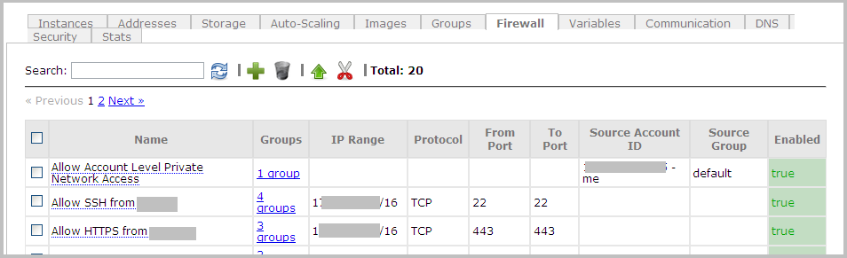

Setting Up Firewall Rules
| Permissions Required |
| To create and apply firewall rules, you must be a Nimbul administrator or a provider account administrator. For more information, see Permissions and Roles. |
Firewall rules are used to grant HTTP access to Nimbul users based on IP ranges or Amazon Web Services account IDs. You may need to create rules to grant access to users outside your organization or in other locations.
When you first add an existing cloud account to Nimbul, the security groups and firewall rules you have already configured for the account will be automatically imported.
Topics covered on this page:
Create a Firewall
Rule
Enable, Disable or Delete a Firewall Rule
Create a Firewall Rule
To set up a new firewall rule, complete these steps:
- In the main Nimbul menu, click Provider Accounts.
- In the list of provider accounts, click the name of the account for which you want to create a firewall rule.
Tip: You can use the Search box to quickly find the account (the list of accounts will automatically refresh to match the characters you type). - On the provider account details page, click the Firewall tab.
 - Click the plus sign icon (to the right of the Search box). A pop-up appears.
- Fill in the fields:
| Field | Description |
| Firewall Rule Name | Enter a name that indicates the purpose of this rule, such as “Allow access from the Chicago office.” Note: Specify a name that’s easy to remember, or make a note of it. You will need it later, when you apply the rule to a security group. |
|---|---|
| To set a rule by IP range: | |
| IP Range | Specify the range in the format network address/subnet mask bits, e.g., 192.168.1.0/24. You can also specify your current IP address by clicking Use My Address. |
| Protocol | Select TCP, UDP or ICMP. |
| Ports | Specify the start and end of the port range to allow (for TCP or UDP). These can be the same number. |
| To set a rule by Amazon Web Services account ID: | |
| EC2 User ID | Enter an AWS account ID, without hyphens. For more information, see the Amazon Web Services documentation. To use your EC2 account, click Use My Account. |
| Group Name | The AWS security group name, as specified in the EC2 account. |
- Click Create. Your new rule will appear at the bottom of the list on the Firewall tab. You can search for it by typing characters in the Search box at the top of the tab.
Now you need to apply the rule to a security group, as described on the next page.
Enable, Disable or Delete a Firewall Rule
Nimbul allows you to temporarily enable and disable firewall rules to help you manage access across the enterprise.
- View the Firewall tab for the provider account by completing steps 1–3 above.
- Select the checkbox for the rules you want to manage.
- Use the icons at the top of the tab to disable, enable or delete the rules.
Note: When you disable a rule, it will be hidden and will no longer be available to add to security groups. This can result in a group with no rules (if you do not have other rules defined for the group).
You do not have to disable a rule in order to delete it. Deleting a rule effectively disables it, immediately removing it from all associated security groups.